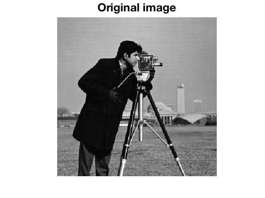
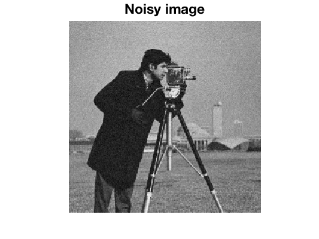
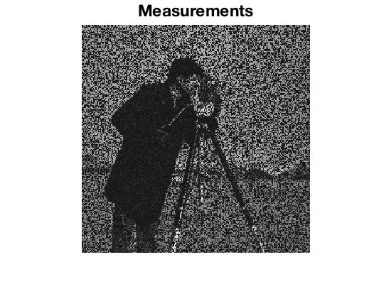
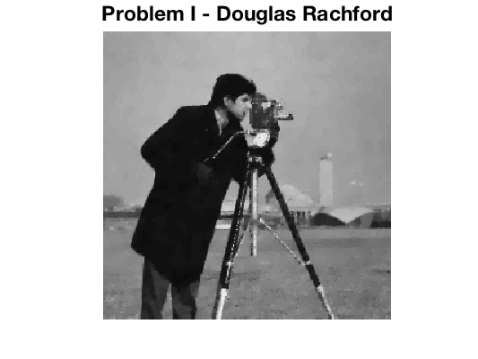
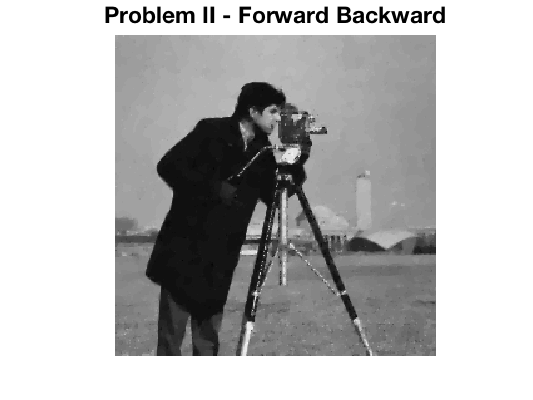

DEMO_UNLOCBOX - Simple tutorial for the UNLocBoXDescriptionWelcome to the tutorial of the UNLocBoX. In this document, we provide an example application that uses the basic concepts of the toolbox. Here you will also find some tricks that may be very useful. You can find an introduction and more detailed documentation in the userguide, available at http://unlocbox.sourceforge.net/notes/unlocbox-note-002.pdf This toolbox is designed to solve convex optimization problems of the form:
\begin{equation*}
arg \min_{x \in \mathbb{R}^N} \left(f_1(x) + f_2(x)\right),
\end{equation*}
or more generally
\begin{equation*}
arg \min_{x \in \mathbb{R}^N} \sum_{n=1}^K f_n(x),
\end{equation*}
where the \(f_i\) are lower semi-continuous convex functions and \(x\) the optimization variables. For more details about the problems, please refer to the userguide (UNLocBoX-note-002) available on https://lts2.epfl.ch/unlocbox/notes/unlocbox-note-002.pdf . This toolbox is based on proximal splitting methods. Those methods cut the problem into smaller (and easier) subproblems that can be solved in an iterative fashion. The UNLocBoX essentially consists of three families of functions:
This toolbox is provided for free. We would be happy to receive comments, information about bugs or any other kind of help in order to improve the toolbox. A simple example: Image in-paintingLet's suppose we have a noisy image with missing pixels. Our goal is simply to fill the unknown values in order to reconstruct an image close to the original one. We first begin by setting up some assumptions about the problem.

The original image provided by the toolbox. Use cameraman() function to access. AssumptionsIn this particular example, we firstly assume that we know the position of the missing pixels. This happens when we know that a specific part of a photo is destroyed, or when we have sampled some of the pixels in known positions and we wish to recover the rest of the image. Secondly, we assume that the image follows some standard distribution. For example, many natural images are known to have sharp edges and almost flat regions (the extreme case would be the cartoon images with completely flat regions). Thirdly, we suppose that known pixels are subject to some Gaussian noise with a variance of \(\epsilon\).

Noisy image.

Measurements. 50 percent of the pixels have been removed. Formulation of the problemAt this point, the problem can be expressed in a mathematical form. We will simulate the masking operation with an operator \(A\). This first assumption leads to a constraint.
\begin{equation*}
Ax = y
\end{equation*}
where \(x\) is the vectorized image we want to recover, \(y\) are the observed noisy pixels and \(A\) a linear operator selecting the known pixels. However due to the addition of noise this constraint can be a little bit relaxed and we rewrite it in the following form
\begin{equation*}
\| Ax - y \|_2 \leq \sqrt{N}\epsilon
\end{equation*}
where \(N\) is the number of known pixels. Note that \(\epsilon\) can be chosen to be equal to 0 so that the equality \(y=Ax\) is satisfied. In our case, as the measurements are noisy, we set \(\epsilon\) to be the expected value of the norm of the noise (standard deviation times square root of number of measurements). We use as a prior assumption that the image has a small total variation norm (TV-norm). (The TV-norm is the \(l^1\)-norm of the gradient of \(x\).) On images, this norm is low when the image is composed of patches of color and few "degradee" (gradients). This is the case for most of natural images. To summarize, we express the problem as
\begin{equation*}
arg \min_x \|x\|_{TV} \hspace{1cm} \text{subject}\hspace{0.25cm} \text{to}\hspace{1cm} \|Ax-y\|_2 \leq \sqrt{N}\epsilon \hspace{1cm} \text{(Problem I)}
\end{equation*}
Note that if the amount of noise is not known, epsilon as a free parameter that tunes the confidence to the measurements. However, this is not the only way to define the problem. We could also write:
\begin{equation*}
arg \min_x \|Ax-y\|_2^2 + \lambda \|x\|_{TV} \hspace{1cm} \text{(Problem II)}
\end{equation*}
with the first function playing the role of a data fidelity term and the second a prior assumption on the signal. \(\lambda\) adjusts the tradeoff between measurement fidelity and prior assumption. We call it the regularization parameter. The smaller it is, the more we trust the measurements and conversely. \(\epsilon\) plays a similar role as \(\lambda\). We have presented two ways to formulate the problem. The reader should keep in mind that choosing between one or the other problem will affect the choice of the solver and the convergence rate. With experience, one should be able to know in advance which problem will lead to the best solver. Note that there exists a bijection between the parameters \(\lambda\) and \(\epsilon\) leading both problems to the same solution. Unfortunately, the bijection function is not trivial to determine. Once your problem is well defined, we need to provide a list of functions to the UNLocBoX solver. (For example, in Problem 2, the functions are \(\|Ax-y\|_2^2\) and :math:` lambda |x|_{TV}`.) Every function is modeled by a MATLAB structure containing some special fields. We separate the functions in two different types: differentiable and non differentiable. For differentiable function, the user needs to fill the following fields: * func.eval : An anonymous function that evaluate the function * func.grad : An anonymous function that evaluate the gradient * func.beta : An upper bound on the Lipschitz constant of the gradient For instance, the function \(\|Ax-y\|_2^2\) is defined in MATLAB by: fsmooth.grad = @(x) 2 * A' * (A*x - y); fsmooth.eval = @(x) norm(A*x - y)^2; fsmooth.beta = 2 * norm(A)^2; The Lipschitz constant of a the gradient is defined as:
\begin{equation*}
\min_{\beta} \text{ s.t } \forall x_1, x_2 \in \mathbb{R}^N \text{ we have } \|\nabla_f(x_1) - \nabla_f(x_2)\|_2 \leq \beta \|x_1 -x_2\|_2
\end{equation*}
When the function is not differentiable, the field .beta is dropped and .grad is replaced by the field .prox that contains an anonymous function for the proximity operator (They will be explained in more details the following section. ftv.prox = @(x, T) prox_tv(x, T * lambda, paramtv); ftv.eval = @(x) lambda * tv_norm(x); Proximity operatorsThe proximity operator of a lower semi-continuous convex function \(f\) is defined by:
Proximity operators minimize a function without going too far from a initial point. They can be thought or assimilated as de-noising operators. Because of the l2-term in the minimization problem, proximity operators perform a regularized minimization of the function \(f\). However, applied iteratively, they lead to the minimization of this function. For \(x^*\) the minimizer of the function \(f\), it is obvious that:
In a sense, proximity operators perform a regularized minimization of the function \(f\). However, they also provide a framework to handle constraints. Those can be inserted into the problem thanks to indicative functions. These functions assert if \(x\) belong to a set \(C\). They only have two output values: \(0\) if \(x\) is in the set and \(\infty\) otherwise:
\begin{equation*}
i_{C}:\mathbb{R}^{L}\rightarrow\{0,+\infty\}:x\mapsto\begin{cases}0,\hspace{0.25cm} & \text{if}\hspace{0.25cm}x\in C\\\\+\infty\hspace{0.25cm} & \text{otherwise}\end{cases}
\end{equation*}
The solution of the proximity operator of this function has to be in the set \(C\), otherwise the \(i_C(x)=\infty\). Moreover, since it also minimizes \(\|x-z\|_2^2\), it will select the closest point to \(z\). As a result the proximity operators of indicator functions are projections. It is important to keep in mind the equivalence between constraints and indicative functions. This is the trick that allows to use hard constraint with the UNLocBoX as it cannot directly handle them. The constraints will thus be inserted in the form of indicative functions. Solving problem IThe UNLocBoX is based on proximal splitting techniques for solving convex optimization problems. These techniques divide the problem into smaller problems that are easier to solve. Topically, each function will compose a sub-problem that will be solved by its proximity operator (or gradient step). In the particular case of problem (I), the solver will iteratively, first minimize a little bit the TV norm and second perform the projection on the fidelity term B2-ball. (The B2-ball is the space of point \(x\) satisfying \(\|Ax-y\|\leq\sqrt{N}\epsilon\)). To solve problem (I), we minimize two functions:
At this point, we are ready to solve the problem. The UNLocBoX contains many different solvers and also a universal one that will select a suitable method for the problem. To use it, just write:
sol = solvep(y,{f1,f2});
You can also use a specific solver for your problem. In this tutorial, we present two of them forward_backward and douglas_rachford. Both of them take as input two functions (they have generalization taking more functions), a starting point and some optional parameters. In our problem, both functions are not smooth on all points of the domain leading to the impossibility to compute the gradient. In that case, solvers (such as forward_backward) using gradient descent cannot be used. As a consequence, we will use douglas_rachford instead. In MATLAB, we write: param.verbose = 2; param.maxit = 50; param.tol = 10e-5; param.gamma = 0.1; fig = figure(100); param.do_sol=@(x) plot_image(x,fig); sol = douglas_rachford(y,f1,f2,param); Or in an equivalent manner (this second way is recommended):
param.method = "douglas_rachford"
sol = solvep(y,{f1,f2},param);

This figure shows the reconstructed image by solving problem I using Douglas Rachford algorithm. You can stop the simulation by typing "ctrl + d" in the consol. At the end of the next iteration, the algorithm will stop and return the current solution. Solving problem IISolving problem II instead of problem I can be done with a small modification of the previous code. First we define another function as follow: f3.grad = @(x) 2*A(A(x) - y); f3.eval = @(x) norm(A(x) - y, 'fro')^2; f3.beta = 2; The structure of f3 contains a field f3.grad. In fact, the l2-norm is a smooth function. As a consequence the gradient is well defined on the entire domain. This allows using the forward_backward solver that can be called by:
param.method = "forward_backward"
sol21 = solvep(y,{f1,f2},param);
In this case, we can also use the douglas_rachford solver. To do so, we need to define the field f3.prox. In general, this is not recommended because a gradient step is usually less computationally expensive than a proximal operator:
param_l2.A = A;
param_l2.At = A;
param_l2.y = y;
param_l2.verbose = 1;
f3.prox = @(x,T) prox_l2(x, T, param_l2);
f3.eval = @(x) norm(A(x) - y, 'fro')^2;
param.method = "douglas_rachford"
sol22 = solvep(y, {f1,f3}, param);
We remind the user that forward_backward will not use the field f3.prox and douglas_rachford will not use the field f3.grad. These two solvers will converge (up to numerical error) to the same solution. However, convergence speed might be different. As we perform only 100 iterations with both of them, we do not obtain exactly the same result.

This figure shows the reconstructed image by solving problem II using the Forward Backward algorithm. This figure shows the reconstructed image by solving problem II using the Douglas Rachford algorithm. Remark: The parameter lambda (the regularization parameter) and epsilon (The radius of the l2 ball) can be chosen empirically. Some methods allow to compute those parameters. However, this is far beyond the scope of this tutorial. ConclusionIn this tutorial, the reader can observe that problem (II) is solved much more efficiently than problem (I).However, writing the problem with a constraint (like problem (I)) often allow a much easier tuning of the parameters at the cost of using a slower solver. Only experience helps to know which formulation of a problem will lead to the best solver. Usually, forward backward (FISTA) and ADMM are considered to be the best solvers. Speed consideration are relative when using the UNLocBoX. Due to general implementation of the toolbox, we estimate the overall speed between one and two times slower than an optimal algorithm cooked and optimized for a special problem (in MATLAB). Thanks for reading this tutorial This code produces the following output: UnLocBoX version 1.7.3. Copyright 2012-2015 LTS2-EPFL, by Nathanael Perraudin The time step is set manually to : 0.1 Algorithm selected: DOUGLAS_RACHFORD Iter 001: Prox_TV: obj = 1.769311e+03, rel_obj = 8.734386e-04, TOL_EPS, iter = 10 Proj. B2: epsilon = 7.098797e+00, ||y-Ax||_2 = 7.098797e+00, TOL_EPS, iter = 2 f(x^*) = 1.693329e+04, rel_eval = 5.917906e-01 Iter 002: Prox_TV: obj = 1.479774e+03, rel_obj = 9.158609e-04, TOL_EPS, iter = 11 Proj. B2: epsilon = 7.098797e+00, ||y-Ax||_2 = 7.098797e+00, TOL_EPS, iter = 2 f(x^*) = 1.036667e+04, rel_eval = 6.334357e-01 Iter 003: Prox_TV: obj = 1.124517e+03, rel_obj = 8.960725e-04, TOL_EPS, iter = 14 Proj. B2: epsilon = 7.098797e+00, ||y-Ax||_2 = 7.098797e+00, TOL_EPS, iter = 2 f(x^*) = 6.022241e+03, rel_eval = 7.213973e-01 Iter 004: Prox_TV: obj = 7.444469e+02, rel_obj = 9.599334e-04, TOL_EPS, iter = 18 Proj. B2: epsilon = 7.098797e+00, ||y-Ax||_2 = 7.098797e+00, TOL_EPS, iter = 2 f(x^*) = 4.234883e+03, rel_eval = 4.220561e-01 Iter 005: Prox_TV: obj = 5.214923e+02, rel_obj = 9.202333e-04, TOL_EPS, iter = 21 Proj. B2: epsilon = 7.098797e+00, ||y-Ax||_2 = 7.098797e+00, TOL_EPS, iter = 2 f(x^*) = 3.582286e+03, rel_eval = 1.821733e-01 Iter 006: Prox_TV: obj = 4.291705e+02, rel_obj = 9.254624e-04, TOL_EPS, iter = 23 Proj. B2: epsilon = 7.098797e+00, ||y-Ax||_2 = 7.098797e+00, TOL_EPS, iter = 2 f(x^*) = 3.085801e+03, rel_eval = 1.608934e-01 Iter 007: Prox_TV: obj = 4.110072e+02, rel_obj = 9.011164e-04, TOL_EPS, iter = 23 Proj. B2: epsilon = 7.098797e+00, ||y-Ax||_2 = 7.098797e+00, TOL_EPS, iter = 2 f(x^*) = 2.621635e+03, rel_eval = 1.770520e-01 Iter 008: Prox_TV: obj = 4.211127e+02, rel_obj = 9.922374e-04, TOL_EPS, iter = 22 Proj. B2: epsilon = 7.098797e+00, ||y-Ax||_2 = 7.098797e+00, TOL_EPS, iter = 2 f(x^*) = 2.247651e+03, rel_eval = 1.663890e-01 Iter 009: Prox_TV: obj = 4.356510e+02, rel_obj = 8.322804e-04, TOL_EPS, iter = 23 Proj. B2: epsilon = 7.098797e+00, ||y-Ax||_2 = 7.098797e+00, TOL_EPS, iter = 2 f(x^*) = 2.032473e+03, rel_eval = 1.058700e-01 Iter 010: Prox_TV: obj = 4.494884e+02, rel_obj = 9.853431e-04, TOL_EPS, iter = 23 Proj. B2: epsilon = 7.098797e+00, ||y-Ax||_2 = 7.098797e+00, TOL_EPS, iter = 2 f(x^*) = 1.948655e+03, rel_eval = 4.301309e-02 Iter 011: Prox_TV: obj = 4.619138e+02, rel_obj = 8.404302e-04, TOL_EPS, iter = 23 Proj. B2: epsilon = 7.098797e+00, ||y-Ax||_2 = 7.098797e+00, TOL_EPS, iter = 2 f(x^*) = 1.918841e+03, rel_eval = 1.553756e-02 Iter 012: Prox_TV: obj = 4.732803e+02, rel_obj = 9.605810e-04, TOL_EPS, iter = 22 Proj. B2: epsilon = 7.098797e+00, ||y-Ax||_2 = 7.098797e+00, TOL_EPS, iter = 2 f(x^*) = 1.899732e+03, rel_eval = 1.005889e-02 Iter 013: Prox_TV: obj = 4.828515e+02, rel_obj = 8.450392e-04, TOL_EPS, iter = 22 Proj. B2: epsilon = 7.098797e+00, ||y-Ax||_2 = 7.098797e+00, TOL_EPS, iter = 2 f(x^*) = 1.882615e+03, rel_eval = 9.092245e-03 Iter 014: Prox_TV: obj = 4.910644e+02, rel_obj = 8.049338e-04, TOL_EPS, iter = 22 Proj. B2: epsilon = 7.098797e+00, ||y-Ax||_2 = 7.098797e+00, TOL_EPS, iter = 2 f(x^*) = 1.871024e+03, rel_eval = 6.194873e-03 Iter 015: Prox_TV: obj = 4.985356e+02, rel_obj = 9.916233e-04, TOL_EPS, iter = 21 Proj. B2: epsilon = 7.098797e+00, ||y-Ax||_2 = 7.098797e+00, TOL_EPS, iter = 2 f(x^*) = 1.866507e+03, rel_eval = 2.420194e-03 Iter 016: Prox_TV: obj = 5.045670e+02, rel_obj = 9.218006e-04, TOL_EPS, iter = 21 Proj. B2: epsilon = 7.098797e+00, ||y-Ax||_2 = 7.098797e+00, TOL_EPS, iter = 2 f(x^*) = 1.861400e+03, rel_eval = 2.743621e-03 Iter 017: Prox_TV: obj = 5.097156e+02, rel_obj = 8.415919e-04, TOL_EPS, iter = 21 Proj. B2: epsilon = 7.098797e+00, ||y-Ax||_2 = 7.098797e+00, TOL_EPS, iter = 2 f(x^*) = 1.857585e+03, rel_eval = 2.053693e-03 Iter 018: Prox_TV: obj = 5.141846e+02, rel_obj = 8.014710e-04, TOL_EPS, iter = 21 Proj. B2: epsilon = 7.098797e+00, ||y-Ax||_2 = 7.098797e+00, TOL_EPS, iter = 2 f(x^*) = 1.854705e+03, rel_eval = 1.552431e-03 Iter 019: Prox_TV: obj = 5.184867e+02, rel_obj = 9.977494e-04, TOL_EPS, iter = 20 Proj. B2: epsilon = 7.098797e+00, ||y-Ax||_2 = 7.098797e+00, TOL_EPS, iter = 2 f(x^*) = 1.855741e+03, rel_eval = 5.582514e-04 Iter 020: Prox_TV: obj = 5.218328e+02, rel_obj = 9.483992e-04, TOL_EPS, iter = 20 Proj. B2: epsilon = 7.098797e+00, ||y-Ax||_2 = 7.098797e+00, TOL_EPS, iter = 2 f(x^*) = 1.854253e+03, rel_eval = 8.024532e-04 Iter 021: Prox_TV: obj = 5.246386e+02, rel_obj = 9.109959e-04, TOL_EPS, iter = 20 Proj. B2: epsilon = 7.098797e+00, ||y-Ax||_2 = 7.098797e+00, TOL_EPS, iter = 2 f(x^*) = 1.853392e+03, rel_eval = 4.648451e-04 Iter 022: Prox_TV: obj = 5.270973e+02, rel_obj = 8.853491e-04, TOL_EPS, iter = 20 Proj. B2: epsilon = 7.098797e+00, ||y-Ax||_2 = 7.098797e+00, TOL_EPS, iter = 2 f(x^*) = 1.853028e+03, rel_eval = 1.966063e-04 Iter 023: Prox_TV: obj = 5.292600e+02, rel_obj = 8.700662e-04, TOL_EPS, iter = 20 Proj. B2: epsilon = 7.098797e+00, ||y-Ax||_2 = 7.098797e+00, TOL_EPS, iter = 2 f(x^*) = 1.853025e+03, rel_eval = 1.169317e-06 DOUGLAS_RACHFORD: f(x^*) = 1.853025e+03, rel_eval = 1.169317e-06 23 iterations Stopping criterion: REL_NORM_OBJ A function has both the prox and a grad fields. The gradient is used Algorithm selected: FORWARD_BACKWARD Iter 001: Prox_TV: obj = 6.047885e+02, rel_obj = 9.862420e-04, TOL_EPS, iter = 5 f(x^*) = 1.154452e+03, rel_eval = 1.674046e-01 Iter 002: Prox_TV: obj = 5.507530e+02, rel_obj = 5.760984e-04, TOL_EPS, iter = 6 f(x^*) = 1.050864e+03, rel_eval = 9.857351e-02 Iter 003: Prox_TV: obj = 5.005275e+02, rel_obj = 6.484914e-04, TOL_EPS, iter = 6 f(x^*) = 9.530912e+02, rel_eval = 1.025854e-01 Iter 004: Prox_TV: obj = 4.527862e+02, rel_obj = 7.023716e-04, TOL_EPS, iter = 6 f(x^*) = 8.597940e+02, rel_eval = 1.085110e-01 Iter 005: Prox_TV: obj = 4.071961e+02, rel_obj = 7.848629e-04, TOL_EPS, iter = 6 f(x^*) = 7.708127e+02, rel_eval = 1.154383e-01 Iter 006: Prox_TV: obj = 3.639187e+02, rel_obj = 8.871347e-04, TOL_EPS, iter = 6 f(x^*) = 6.868587e+02, rel_eval = 1.222290e-01 Iter 007: Prox_TV: obj = 3.231400e+02, rel_obj = 6.800124e-04, TOL_EPS, iter = 7 f(x^*) = 6.082148e+02, rel_eval = 1.293027e-01 Iter 008: Prox_TV: obj = 2.856846e+02, rel_obj = 8.163252e-04, TOL_EPS, iter = 7 f(x^*) = 5.369385e+02, rel_eval = 1.327458e-01 Iter 009: Prox_TV: obj = 2.519999e+02, rel_obj = 9.587570e-04, TOL_EPS, iter = 7 f(x^*) = 4.733263e+02, rel_eval = 1.343941e-01 Iter 010: Prox_TV: obj = 2.218817e+02, rel_obj = 8.660368e-04, TOL_EPS, iter = 8 f(x^*) = 4.166703e+02, rel_eval = 1.359730e-01 Iter 011: Prox_TV: obj = 1.953369e+02, rel_obj = 8.365332e-04, TOL_EPS, iter = 9 f(x^*) = 3.669591e+02, rel_eval = 1.354679e-01 Iter 012: Prox_TV: obj = 1.721668e+02, rel_obj = 7.875813e-04, TOL_EPS, iter = 10 f(x^*) = 3.238024e+02, rel_eval = 1.332813e-01 Iter 013: Prox_TV: obj = 1.523312e+02, rel_obj = 9.432817e-04, TOL_EPS, iter = 10 f(x^*) = 2.872346e+02, rel_eval = 1.273098e-01 Iter 014: Prox_TV: obj = 1.354766e+02, rel_obj = 8.918213e-04, TOL_EPS, iter = 11 f(x^*) = 2.564109e+02, rel_eval = 1.202121e-01 Iter 015: Prox_TV: obj = 1.214570e+02, rel_obj = 7.501898e-04, TOL_EPS, iter = 12 f(x^*) = 2.309145e+02, rel_eval = 1.104149e-01 Iter 016: Prox_TV: obj = 1.100210e+02, rel_obj = 9.711894e-04, TOL_EPS, iter = 12 f(x^*) = 2.103253e+02, rel_eval = 9.789226e-02 Iter 017: Prox_TV: obj = 1.007260e+02, rel_obj = 8.676554e-04, TOL_EPS, iter = 13 f(x^*) = 1.937095e+02, rel_eval = 8.577662e-02 Iter 018: Prox_TV: obj = 9.333100e+01, rel_obj = 7.741595e-04, TOL_EPS, iter = 14 f(x^*) = 1.805574e+02, rel_eval = 7.284179e-02 Iter 019: Prox_TV: obj = 8.756389e+01, rel_obj = 8.983297e-04, TOL_EPS, iter = 14 f(x^*) = 1.703429e+02, rel_eval = 5.996449e-02 Iter 020: Prox_TV: obj = 8.307697e+01, rel_obj = 9.936673e-04, TOL_EPS, iter = 14 f(x^*) = 1.624958e+02, rel_eval = 4.829094e-02 Iter 021: Prox_TV: obj = 7.958196e+01, rel_obj = 8.816920e-04, TOL_EPS, iter = 15 f(x^*) = 1.563917e+02, rel_eval = 3.903120e-02 Iter 022: Prox_TV: obj = 7.700892e+01, rel_obj = 9.548878e-04, TOL_EPS, iter = 15 f(x^*) = 1.519831e+02, rel_eval = 2.900704e-02 Iter 023: Prox_TV: obj = 7.514611e+01, rel_obj = 9.950659e-04, TOL_EPS, iter = 15 f(x^*) = 1.488784e+02, rel_eval = 2.085349e-02 Iter 024: Prox_TV: obj = 7.386795e+01, rel_obj = 9.361376e-04, TOL_EPS, iter = 15 f(x^*) = 1.467961e+02, rel_eval = 1.418544e-02 Iter 025: Prox_TV: obj = 7.301763e+01, rel_obj = 9.409497e-04, TOL_EPS, iter = 15 f(x^*) = 1.454154e+02, rel_eval = 9.494509e-03 Iter 026: Prox_TV: obj = 7.245285e+01, rel_obj = 9.440821e-04, TOL_EPS, iter = 15 f(x^*) = 1.444735e+02, rel_eval = 6.519766e-03 Iter 027: Prox_TV: obj = 7.205566e+01, rel_obj = 9.483977e-04, TOL_EPS, iter = 15 f(x^*) = 1.437992e+02, rel_eval = 4.689057e-03 Iter 028: Prox_TV: obj = 7.176630e+01, rel_obj = 9.182439e-04, TOL_EPS, iter = 15 f(x^*) = 1.433113e+02, rel_eval = 3.404629e-03 Iter 029: Prox_TV: obj = 7.156299e+01, rel_obj = 9.191355e-04, TOL_EPS, iter = 15 f(x^*) = 1.429663e+02, rel_eval = 2.412762e-03 Iter 030: Prox_TV: obj = 7.141353e+01, rel_obj = 9.082514e-04, TOL_EPS, iter = 15 f(x^*) = 1.427092e+02, rel_eval = 1.801792e-03 Iter 031: Prox_TV: obj = 7.130274e+01, rel_obj = 9.411324e-04, TOL_EPS, iter = 15 f(x^*) = 1.425257e+02, rel_eval = 1.287290e-03 Iter 032: Prox_TV: obj = 7.122564e+01, rel_obj = 9.606975e-04, TOL_EPS, iter = 15 f(x^*) = 1.423896e+02, rel_eval = 9.563492e-04 Iter 033: Prox_TV: obj = 7.116707e+01, rel_obj = 9.520755e-04, TOL_EPS, iter = 15 f(x^*) = 1.422843e+02, rel_eval = 7.395408e-04 Iter 034: Prox_TV: obj = 7.111999e+01, rel_obj = 9.437336e-04, TOL_EPS, iter = 15 f(x^*) = 1.422015e+02, rel_eval = 5.825176e-04 Iter 035: Prox_TV: obj = 7.108239e+01, rel_obj = 9.468548e-04, TOL_EPS, iter = 15 f(x^*) = 1.421333e+02, rel_eval = 4.797089e-04 Iter 036: Prox_TV: obj = 7.105135e+01, rel_obj = 9.570824e-04, TOL_EPS, iter = 15 f(x^*) = 1.420753e+02, rel_eval = 4.083915e-04 Iter 037: Prox_TV: obj = 7.102475e+01, rel_obj = 9.577497e-04, TOL_EPS, iter = 15 f(x^*) = 1.420251e+02, rel_eval = 3.536442e-04 Iter 038: Prox_TV: obj = 7.100120e+01, rel_obj = 9.536477e-04, TOL_EPS, iter = 15 f(x^*) = 1.419807e+02, rel_eval = 3.127988e-04 Iter 039: Prox_TV: obj = 7.098040e+01, rel_obj = 9.490621e-04, TOL_EPS, iter = 15 f(x^*) = 1.419413e+02, rel_eval = 2.776900e-04 Iter 040: Prox_TV: obj = 7.096161e+01, rel_obj = 9.458573e-04, TOL_EPS, iter = 15 f(x^*) = 1.419058e+02, rel_eval = 2.498552e-04 Iter 041: Prox_TV: obj = 7.094490e+01, rel_obj = 9.402254e-04, TOL_EPS, iter = 15 f(x^*) = 1.418742e+02, rel_eval = 2.223625e-04 Iter 042: Prox_TV: obj = 7.093026e+01, rel_obj = 9.289361e-04, TOL_EPS, iter = 15 f(x^*) = 1.418467e+02, rel_eval = 1.941767e-04 Iter 043: Prox_TV: obj = 7.091638e+01, rel_obj = 9.349412e-04, TOL_EPS, iter = 15 f(x^*) = 1.418203e+02, rel_eval = 1.860322e-04 Iter 044: Prox_TV: obj = 7.090380e+01, rel_obj = 9.407001e-04, TOL_EPS, iter = 15 f(x^*) = 1.417963e+02, rel_eval = 1.692470e-04 Iter 045: Prox_TV: obj = 7.089268e+01, rel_obj = 9.396261e-04, TOL_EPS, iter = 15 f(x^*) = 1.417751e+02, rel_eval = 1.497843e-04 Iter 046: Prox_TV: obj = 7.088268e+01, rel_obj = 9.361692e-04, TOL_EPS, iter = 15 f(x^*) = 1.417560e+02, rel_eval = 1.348462e-04 Iter 047: Prox_TV: obj = 7.087343e+01, rel_obj = 9.363739e-04, TOL_EPS, iter = 15 f(x^*) = 1.417382e+02, rel_eval = 1.251721e-04 Iter 048: Prox_TV: obj = 7.086472e+01, rel_obj = 9.393623e-04, TOL_EPS, iter = 15 f(x^*) = 1.417215e+02, rel_eval = 1.183538e-04 Iter 049: Prox_TV: obj = 7.085697e+01, rel_obj = 9.404671e-04, TOL_EPS, iter = 15 f(x^*) = 1.417067e+02, rel_eval = 1.044008e-04 Iter 050: Prox_TV: obj = 7.084973e+01, rel_obj = 9.436367e-04, TOL_EPS, iter = 15 f(x^*) = 1.416929e+02, rel_eval = 9.738323e-05 Iter 051: Prox_TV: obj = 7.084333e+01, rel_obj = 9.446719e-04, TOL_EPS, iter = 15 f(x^*) = 1.416808e+02, rel_eval = 8.501811e-05 Iter 052: Prox_TV: obj = 7.083764e+01, rel_obj = 9.453393e-04, TOL_EPS, iter = 15 f(x^*) = 1.416701e+02, rel_eval = 7.537647e-05 Iter 053: Prox_TV: obj = 7.083272e+01, rel_obj = 9.474638e-04, TOL_EPS, iter = 15 f(x^*) = 1.416608e+02, rel_eval = 6.574799e-05 Iter 054: Prox_TV: obj = 7.082805e+01, rel_obj = 9.457674e-04, TOL_EPS, iter = 15 f(x^*) = 1.416519e+02, rel_eval = 6.290716e-05 Iter 055: Prox_TV: obj = 7.082387e+01, rel_obj = 9.468377e-04, TOL_EPS, iter = 15 f(x^*) = 1.416439e+02, rel_eval = 5.661200e-05 Iter 056: Prox_TV: obj = 7.082009e+01, rel_obj = 9.450737e-04, TOL_EPS, iter = 15 f(x^*) = 1.416366e+02, rel_eval = 5.120680e-05 Iter 057: Prox_TV: obj = 7.081664e+01, rel_obj = 9.442827e-04, TOL_EPS, iter = 15 f(x^*) = 1.416300e+02, rel_eval = 4.675286e-05 Iter 058: Prox_TV: obj = 7.081328e+01, rel_obj = 9.470222e-04, TOL_EPS, iter = 15 f(x^*) = 1.416236e+02, rel_eval = 4.556202e-05 Iter 059: Prox_TV: obj = 7.081030e+01, rel_obj = 9.476590e-04, TOL_EPS, iter = 15 f(x^*) = 1.416178e+02, rel_eval = 4.050594e-05 Iter 060: Prox_TV: obj = 7.080773e+01, rel_obj = 9.468912e-04, TOL_EPS, iter = 15 f(x^*) = 1.416129e+02, rel_eval = 3.461562e-05 Iter 061: Prox_TV: obj = 7.080534e+01, rel_obj = 9.461278e-04, TOL_EPS, iter = 15 f(x^*) = 1.416084e+02, rel_eval = 3.234468e-05 Iter 062: Prox_TV: obj = 7.080312e+01, rel_obj = 9.456593e-04, TOL_EPS, iter = 15 f(x^*) = 1.416041e+02, rel_eval = 3.004133e-05 Iter 063: Prox_TV: obj = 7.080107e+01, rel_obj = 9.452517e-04, TOL_EPS, iter = 15 f(x^*) = 1.416002e+02, rel_eval = 2.785993e-05 Iter 064: Prox_TV: obj = 7.079912e+01, rel_obj = 9.449638e-04, TOL_EPS, iter = 15 f(x^*) = 1.415964e+02, rel_eval = 2.645860e-05 Iter 065: Prox_TV: obj = 7.079733e+01, rel_obj = 9.449648e-04, TOL_EPS, iter = 15 f(x^*) = 1.415929e+02, rel_eval = 2.457559e-05 Iter 066: Prox_TV: obj = 7.079566e+01, rel_obj = 9.448756e-04, TOL_EPS, iter = 15 f(x^*) = 1.415897e+02, rel_eval = 2.283448e-05 Iter 067: Prox_TV: obj = 7.079406e+01, rel_obj = 9.450627e-04, TOL_EPS, iter = 15 f(x^*) = 1.415866e+02, rel_eval = 2.187601e-05 Iter 068: Prox_TV: obj = 7.079255e+01, rel_obj = 9.453258e-04, TOL_EPS, iter = 15 f(x^*) = 1.415836e+02, rel_eval = 2.084502e-05 Iter 069: Prox_TV: obj = 7.079113e+01, rel_obj = 9.453501e-04, TOL_EPS, iter = 15 f(x^*) = 1.415809e+02, rel_eval = 1.949662e-05 Iter 070: Prox_TV: obj = 7.078980e+01, rel_obj = 9.456398e-04, TOL_EPS, iter = 15 f(x^*) = 1.415783e+02, rel_eval = 1.824347e-05 Iter 071: Prox_TV: obj = 7.078853e+01, rel_obj = 9.460444e-04, TOL_EPS, iter = 15 f(x^*) = 1.415758e+02, rel_eval = 1.741630e-05 Iter 072: Prox_TV: obj = 7.078733e+01, rel_obj = 9.461053e-04, TOL_EPS, iter = 15 f(x^*) = 1.415735e+02, rel_eval = 1.652847e-05 Iter 073: Prox_TV: obj = 7.078617e+01, rel_obj = 9.468529e-04, TOL_EPS, iter = 15 f(x^*) = 1.415712e+02, rel_eval = 1.605547e-05 Iter 074: Prox_TV: obj = 7.078506e+01, rel_obj = 9.477105e-04, TOL_EPS, iter = 15 f(x^*) = 1.415691e+02, rel_eval = 1.525744e-05 Iter 075: Prox_TV: obj = 7.078400e+01, rel_obj = 9.485324e-04, TOL_EPS, iter = 15 f(x^*) = 1.415670e+02, rel_eval = 1.467356e-05 Iter 076: Prox_TV: obj = 7.078298e+01, rel_obj = 9.493312e-04, TOL_EPS, iter = 15 f(x^*) = 1.415650e+02, rel_eval = 1.397254e-05 Iter 077: Prox_TV: obj = 7.078203e+01, rel_obj = 9.498061e-04, TOL_EPS, iter = 15 f(x^*) = 1.415631e+02, rel_eval = 1.312539e-05 Iter 078: Prox_TV: obj = 7.078111e+01, rel_obj = 9.502846e-04, TOL_EPS, iter = 15 f(x^*) = 1.415613e+02, rel_eval = 1.272377e-05 Iter 079: Prox_TV: obj = 7.078023e+01, rel_obj = 9.506684e-04, TOL_EPS, iter = 15 f(x^*) = 1.415596e+02, rel_eval = 1.211463e-05 Iter 080: Prox_TV: obj = 7.077943e+01, rel_obj = 9.509713e-04, TOL_EPS, iter = 15 f(x^*) = 1.415581e+02, rel_eval = 1.113484e-05 Iter 081: Prox_TV: obj = 7.077871e+01, rel_obj = 9.509277e-04, TOL_EPS, iter = 15 f(x^*) = 1.415567e+02, rel_eval = 9.881050e-06 FORWARD_BACKWARD: f(x^*) = 1.415567e+02, rel_eval = 9.881050e-06 81 iterations Stopping criterion: REL_NORM_OBJ The time step is set manually to : 0.5 Algorithm selected: DOUGLAS_RACHFORD Iter 001: Prox_TV: obj = 6.047885e+02, rel_obj = 9.862420e-04, TOL_EPS, iter = 5 prox_L2: ||w (A x- y) ||_2^2 = 1.774398e+01, REL_OB, iter = 0 f(x^*) = 1.176072e+03, rel_eval = 1.459439e-01 Iter 002: Prox_TV: obj = 5.507530e+02, rel_obj = 5.760984e-04, TOL_EPS, iter = 6 prox_L2: ||w (A x- y) ||_2^2 = 3.948697e+01, REL_OB, iter = 0 f(x^*) = 1.056753e+03, rel_eval = 1.129112e-01 Iter 003: Prox_TV: obj = 5.005275e+02, rel_obj = 6.484914e-04, TOL_EPS, iter = 6 prox_L2: ||w (A x- y) ||_2^2 = 5.326929e+01, REL_OB, iter = 0 f(x^*) = 9.550238e+02, rel_eval = 1.065197e-01 Iter 004: Prox_TV: obj = 4.527862e+02, rel_obj = 7.023716e-04, TOL_EPS, iter = 6 prox_L2: ||w (A x- y) ||_2^2 = 6.065330e+01, REL_OB, iter = 0 f(x^*) = 8.607438e+02, rel_eval = 1.095332e-01 Iter 005: Prox_TV: obj = 4.071961e+02, rel_obj = 7.848629e-04, TOL_EPS, iter = 6 prox_L2: ||w (A x- y) ||_2^2 = 6.418296e+01, REL_OB, iter = 0 f(x^*) = 7.714690e+02, rel_eval = 1.157206e-01 Iter 006: Prox_TV: obj = 3.639187e+02, rel_obj = 8.871347e-04, TOL_EPS, iter = 6 prox_L2: ||w (A x- y) ||_2^2 = 6.546295e+01, REL_OB, iter = 0 f(x^*) = 6.874508e+02, rel_eval = 1.222170e-01 Iter 007: Prox_TV: obj = 3.231400e+02, rel_obj = 6.800124e-04, TOL_EPS, iter = 7 prox_L2: ||w (A x- y) ||_2^2 = 6.542490e+01, REL_OB, iter = 0 f(x^*) = 6.089460e+02, rel_eval = 1.289191e-01 Iter 008: Prox_TV: obj = 2.856846e+02, rel_obj = 8.163252e-04, TOL_EPS, iter = 7 prox_L2: ||w (A x- y) ||_2^2 = 6.445092e+01, REL_OB, iter = 0 f(x^*) = 5.378004e+02, rel_eval = 1.322901e-01 Iter 009: Prox_TV: obj = 2.519999e+02, rel_obj = 9.587570e-04, TOL_EPS, iter = 7 prox_L2: ||w (A x- y) ||_2^2 = 6.282460e+01, REL_OB, iter = 0 f(x^*) = 4.743818e+02, rel_eval = 1.336868e-01 Iter 010: Prox_TV: obj = 2.218817e+02, rel_obj = 8.660368e-04, TOL_EPS, iter = 8 prox_L2: ||w (A x- y) ||_2^2 = 6.085596e+01, REL_OB, iter = 0 f(x^*) = 4.180140e+02, rel_eval = 1.348465e-01 Iter 011: Prox_TV: obj = 1.953369e+02, rel_obj = 8.365332e-04, TOL_EPS, iter = 9 prox_L2: ||w (A x- y) ||_2^2 = 5.878718e+01, REL_OB, iter = 0 f(x^*) = 3.685675e+02, rel_eval = 1.341586e-01 Iter 012: Prox_TV: obj = 1.721668e+02, rel_obj = 7.875813e-04, TOL_EPS, iter = 10 prox_L2: ||w (A x- y) ||_2^2 = 5.676150e+01, REL_OB, iter = 0 f(x^*) = 3.256896e+02, rel_eval = 1.316527e-01 Iter 013: Prox_TV: obj = 1.523312e+02, rel_obj = 9.432817e-04, TOL_EPS, iter = 10 prox_L2: ||w (A x- y) ||_2^2 = 5.483159e+01, REL_OB, iter = 0 f(x^*) = 2.893391e+02, rel_eval = 1.256329e-01 Iter 014: Prox_TV: obj = 1.354766e+02, rel_obj = 8.918213e-04, TOL_EPS, iter = 11 prox_L2: ||w (A x- y) ||_2^2 = 5.300594e+01, REL_OB, iter = 0 f(x^*) = 2.587478e+02, rel_eval = 1.182281e-01 Iter 015: Prox_TV: obj = 1.214570e+02, rel_obj = 7.501898e-04, TOL_EPS, iter = 12 prox_L2: ||w (A x- y) ||_2^2 = 5.141617e+01, REL_OB, iter = 0 f(x^*) = 2.333538e+02, rel_eval = 1.088222e-01 Iter 016: Prox_TV: obj = 1.100210e+02, rel_obj = 9.711894e-04, TOL_EPS, iter = 12 prox_L2: ||w (A x- y) ||_2^2 = 5.009114e+01, REL_OB, iter = 0 f(x^*) = 2.127650e+02, rel_eval = 9.676739e-02 Iter 017: Prox_TV: obj = 1.007260e+02, rel_obj = 8.676554e-04, TOL_EPS, iter = 13 prox_L2: ||w (A x- y) ||_2^2 = 4.902701e+01, REL_OB, iter = 0 f(x^*) = 1.961727e+02, rel_eval = 8.458034e-02 Iter 018: Prox_TV: obj = 9.333100e+01, rel_obj = 7.741595e-04, TOL_EPS, iter = 14 prox_L2: ||w (A x- y) ||_2^2 = 4.826370e+01, REL_OB, iter = 0 f(x^*) = 1.829219e+02, rel_eval = 7.243968e-02 Iter 019: Prox_TV: obj = 8.756389e+01, rel_obj = 8.983297e-04, TOL_EPS, iter = 14 prox_L2: ||w (A x- y) ||_2^2 = 4.776136e+01, REL_OB, iter = 0 f(x^*) = 1.724554e+02, rel_eval = 6.069071e-02 Iter 020: Prox_TV: obj = 8.307697e+01, rel_obj = 9.936673e-04, TOL_EPS, iter = 14 prox_L2: ||w (A x- y) ||_2^2 = 4.743490e+01, REL_OB, iter = 0 f(x^*) = 1.643884e+02, rel_eval = 4.907289e-02 Iter 021: Prox_TV: obj = 7.958196e+01, rel_obj = 8.816920e-04, TOL_EPS, iter = 15 prox_L2: ||w (A x- y) ||_2^2 = 4.725721e+01, REL_OB, iter = 0 f(x^*) = 1.580906e+02, rel_eval = 3.983671e-02 Iter 022: Prox_TV: obj = 7.700892e+01, rel_obj = 9.548878e-04, TOL_EPS, iter = 15 prox_L2: ||w (A x- y) ||_2^2 = 4.718860e+01, REL_OB, iter = 0 f(x^*) = 1.534385e+02, rel_eval = 3.031899e-02 Iter 023: Prox_TV: obj = 7.514611e+01, rel_obj = 9.950659e-04, TOL_EPS, iter = 15 prox_L2: ||w (A x- y) ||_2^2 = 4.718883e+01, REL_OB, iter = 0 f(x^*) = 1.501089e+02, rel_eval = 2.218104e-02 Iter 024: Prox_TV: obj = 7.386795e+01, rel_obj = 9.361376e-04, TOL_EPS, iter = 15 prox_L2: ||w (A x- y) ||_2^2 = 4.722999e+01, REL_OB, iter = 0 f(x^*) = 1.478142e+02, rel_eval = 1.552461e-02 Iter 025: Prox_TV: obj = 7.301763e+01, rel_obj = 9.409497e-04, TOL_EPS, iter = 15 prox_L2: ||w (A x- y) ||_2^2 = 4.728347e+01, REL_OB, iter = 0 f(x^*) = 1.462093e+02, rel_eval = 1.097633e-02 Iter 026: Prox_TV: obj = 7.245285e+01, rel_obj = 9.440821e-04, TOL_EPS, iter = 15 prox_L2: ||w (A x- y) ||_2^2 = 4.733412e+01, REL_OB, iter = 0 f(x^*) = 1.450454e+02, rel_eval = 8.024755e-03 Iter 027: Prox_TV: obj = 7.205566e+01, rel_obj = 9.483977e-04, TOL_EPS, iter = 15 prox_L2: ||w (A x- y) ||_2^2 = 4.738521e+01, REL_OB, iter = 0 f(x^*) = 1.441826e+02, rel_eval = 5.983703e-03 Iter 028: Prox_TV: obj = 7.176630e+01, rel_obj = 9.182439e-04, TOL_EPS, iter = 15 prox_L2: ||w (A x- y) ||_2^2 = 4.742546e+01, REL_OB, iter = 0 f(x^*) = 1.435702e+02, rel_eval = 4.266129e-03 Iter 029: Prox_TV: obj = 7.156299e+01, rel_obj = 9.191355e-04, TOL_EPS, iter = 15 prox_L2: ||w (A x- y) ||_2^2 = 4.745006e+01, REL_OB, iter = 0 f(x^*) = 1.431401e+02, rel_eval = 3.004390e-03 Iter 030: Prox_TV: obj = 7.141353e+01, rel_obj = 9.082514e-04, TOL_EPS, iter = 15 prox_L2: ||w (A x- y) ||_2^2 = 4.746612e+01, REL_OB, iter = 0 f(x^*) = 1.428250e+02, rel_eval = 2.206577e-03 Iter 031: Prox_TV: obj = 7.130274e+01, rel_obj = 9.411324e-04, TOL_EPS, iter = 15 prox_L2: ||w (A x- y) ||_2^2 = 4.747894e+01, REL_OB, iter = 0 f(x^*) = 1.426091e+02, rel_eval = 1.513871e-03 Iter 032: Prox_TV: obj = 7.122564e+01, rel_obj = 9.606975e-04, TOL_EPS, iter = 15 prox_L2: ||w (A x- y) ||_2^2 = 4.748775e+01, REL_OB, iter = 0 f(x^*) = 1.424445e+02, rel_eval = 1.155177e-03 Iter 033: Prox_TV: obj = 7.116707e+01, rel_obj = 9.520755e-04, TOL_EPS, iter = 15 prox_L2: ||w (A x- y) ||_2^2 = 4.749086e+01, REL_OB, iter = 0 f(x^*) = 1.423194e+02, rel_eval = 8.794191e-04 Iter 034: Prox_TV: obj = 7.111999e+01, rel_obj = 9.437336e-04, TOL_EPS, iter = 15 prox_L2: ||w (A x- y) ||_2^2 = 4.749055e+01, REL_OB, iter = 0 f(x^*) = 1.422241e+02, rel_eval = 6.699003e-04 Iter 035: Prox_TV: obj = 7.108239e+01, rel_obj = 9.468548e-04, TOL_EPS, iter = 15 prox_L2: ||w (A x- y) ||_2^2 = 4.748821e+01, REL_OB, iter = 0 f(x^*) = 1.421480e+02, rel_eval = 5.351248e-04 Iter 036: Prox_TV: obj = 7.105135e+01, rel_obj = 9.570824e-04, TOL_EPS, iter = 15 prox_L2: ||w (A x- y) ||_2^2 = 4.748548e+01, REL_OB, iter = 0 f(x^*) = 1.420844e+02, rel_eval = 4.474315e-04 Iter 037: Prox_TV: obj = 7.102475e+01, rel_obj = 9.577497e-04, TOL_EPS, iter = 15 prox_L2: ||w (A x- y) ||_2^2 = 4.748255e+01, REL_OB, iter = 0 f(x^*) = 1.420308e+02, rel_eval = 3.779822e-04 Iter 038: Prox_TV: obj = 7.100120e+01, rel_obj = 9.536477e-04, TOL_EPS, iter = 15 prox_L2: ||w (A x- y) ||_2^2 = 4.747935e+01, REL_OB, iter = 0 f(x^*) = 1.419849e+02, rel_eval = 3.231245e-04 Iter 039: Prox_TV: obj = 7.098040e+01, rel_obj = 9.490621e-04, TOL_EPS, iter = 15 prox_L2: ||w (A x- y) ||_2^2 = 4.747634e+01, REL_OB, iter = 0 f(x^*) = 1.419445e+02, rel_eval = 2.844906e-04 Iter 040: Prox_TV: obj = 7.096161e+01, rel_obj = 9.458573e-04, TOL_EPS, iter = 15 prox_L2: ||w (A x- y) ||_2^2 = 4.747350e+01, REL_OB, iter = 0 f(x^*) = 1.419087e+02, rel_eval = 2.520224e-04 Iter 041: Prox_TV: obj = 7.094490e+01, rel_obj = 9.402254e-04, TOL_EPS, iter = 15 prox_L2: ||w (A x- y) ||_2^2 = 4.747109e+01, REL_OB, iter = 0 f(x^*) = 1.418770e+02, rel_eval = 2.239089e-04 Iter 042: Prox_TV: obj = 7.093026e+01, rel_obj = 9.289361e-04, TOL_EPS, iter = 15 prox_L2: ||w (A x- y) ||_2^2 = 4.746927e+01, REL_OB, iter = 0 f(x^*) = 1.418488e+02, rel_eval = 1.985413e-04 Iter 043: Prox_TV: obj = 7.091638e+01, rel_obj = 9.349412e-04, TOL_EPS, iter = 15 prox_L2: ||w (A x- y) ||_2^2 = 4.746755e+01, REL_OB, iter = 0 f(x^*) = 1.418226e+02, rel_eval = 1.846298e-04 Iter 044: Prox_TV: obj = 7.090380e+01, rel_obj = 9.407001e-04, TOL_EPS, iter = 15 prox_L2: ||w (A x- y) ||_2^2 = 4.746625e+01, REL_OB, iter = 0 f(x^*) = 1.417983e+02, rel_eval = 1.716144e-04 Iter 045: Prox_TV: obj = 7.089268e+01, rel_obj = 9.396261e-04, TOL_EPS, iter = 15 prox_L2: ||w (A x- y) ||_2^2 = 4.746511e+01, REL_OB, iter = 0 f(x^*) = 1.417767e+02, rel_eval = 1.522436e-04 Iter 046: Prox_TV: obj = 7.088268e+01, rel_obj = 9.361692e-04, TOL_EPS, iter = 15 prox_L2: ||w (A x- y) ||_2^2 = 4.746411e+01, REL_OB, iter = 0 f(x^*) = 1.417572e+02, rel_eval = 1.372117e-04 Iter 047: Prox_TV: obj = 7.087343e+01, rel_obj = 9.363739e-04, TOL_EPS, iter = 15 prox_L2: ||w (A x- y) ||_2^2 = 4.746325e+01, REL_OB, iter = 0 f(x^*) = 1.417392e+02, rel_eval = 1.272852e-04 Iter 048: Prox_TV: obj = 7.086472e+01, rel_obj = 9.393623e-04, TOL_EPS, iter = 15 prox_L2: ||w (A x- y) ||_2^2 = 4.746254e+01, REL_OB, iter = 0 f(x^*) = 1.417223e+02, rel_eval = 1.192725e-04 Iter 049: Prox_TV: obj = 7.085697e+01, rel_obj = 9.404671e-04, TOL_EPS, iter = 15 prox_L2: ||w (A x- y) ||_2^2 = 4.746165e+01, REL_OB, iter = 0 f(x^*) = 1.417075e+02, rel_eval = 1.041657e-04 Iter 050: Prox_TV: obj = 7.084973e+01, rel_obj = 9.436367e-04, TOL_EPS, iter = 15 prox_L2: ||w (A x- y) ||_2^2 = 4.746042e+01, REL_OB, iter = 0 f(x^*) = 1.416940e+02, rel_eval = 9.554436e-05 Iter 051: Prox_TV: obj = 7.084333e+01, rel_obj = 9.446719e-04, TOL_EPS, iter = 15 prox_L2: ||w (A x- y) ||_2^2 = 4.745910e+01, REL_OB, iter = 0 f(x^*) = 1.416820e+02, rel_eval = 8.502559e-05 Iter 052: Prox_TV: obj = 7.083764e+01, rel_obj = 9.453393e-04, TOL_EPS, iter = 15 prox_L2: ||w (A x- y) ||_2^2 = 4.745765e+01, REL_OB, iter = 0 f(x^*) = 1.416713e+02, rel_eval = 7.522440e-05 Iter 053: Prox_TV: obj = 7.083272e+01, rel_obj = 9.474638e-04, TOL_EPS, iter = 15 prox_L2: ||w (A x- y) ||_2^2 = 4.745657e+01, REL_OB, iter = 0 f(x^*) = 1.416617e+02, rel_eval = 6.795561e-05 Iter 054: Prox_TV: obj = 7.082805e+01, rel_obj = 9.457674e-04, TOL_EPS, iter = 15 prox_L2: ||w (A x- y) ||_2^2 = 4.745585e+01, REL_OB, iter = 0 f(x^*) = 1.416526e+02, rel_eval = 6.404871e-05 Iter 055: Prox_TV: obj = 7.082387e+01, rel_obj = 9.468377e-04, TOL_EPS, iter = 15 prox_L2: ||w (A x- y) ||_2^2 = 4.745529e+01, REL_OB, iter = 0 f(x^*) = 1.416445e+02, rel_eval = 5.738774e-05 Iter 056: Prox_TV: obj = 7.082009e+01, rel_obj = 9.450737e-04, TOL_EPS, iter = 15 prox_L2: ||w (A x- y) ||_2^2 = 4.745485e+01, REL_OB, iter = 0 f(x^*) = 1.416371e+02, rel_eval = 5.172676e-05 Iter 057: Prox_TV: obj = 7.081664e+01, rel_obj = 9.442827e-04, TOL_EPS, iter = 15 prox_L2: ||w (A x- y) ||_2^2 = 4.745452e+01, REL_OB, iter = 0 f(x^*) = 1.416304e+02, rel_eval = 4.761178e-05 Iter 058: Prox_TV: obj = 7.081328e+01, rel_obj = 9.470222e-04, TOL_EPS, iter = 15 prox_L2: ||w (A x- y) ||_2^2 = 4.745431e+01, REL_OB, iter = 0 f(x^*) = 1.416239e+02, rel_eval = 4.590891e-05 Iter 059: Prox_TV: obj = 7.081030e+01, rel_obj = 9.476590e-04, TOL_EPS, iter = 15 prox_L2: ||w (A x- y) ||_2^2 = 4.745418e+01, REL_OB, iter = 0 f(x^*) = 1.416181e+02, rel_eval = 4.086478e-05 Iter 060: Prox_TV: obj = 7.080773e+01, rel_obj = 9.468912e-04, TOL_EPS, iter = 15 prox_L2: ||w (A x- y) ||_2^2 = 4.745400e+01, REL_OB, iter = 0 f(x^*) = 1.416132e+02, rel_eval = 3.479168e-05 Iter 061: Prox_TV: obj = 7.080534e+01, rel_obj = 9.461278e-04, TOL_EPS, iter = 15 prox_L2: ||w (A x- y) ||_2^2 = 4.745376e+01, REL_OB, iter = 0 f(x^*) = 1.416086e+02, rel_eval = 3.246437e-05 Iter 062: Prox_TV: obj = 7.080312e+01, rel_obj = 9.456593e-04, TOL_EPS, iter = 15 prox_L2: ||w (A x- y) ||_2^2 = 4.745355e+01, REL_OB, iter = 0 f(x^*) = 1.416043e+02, rel_eval = 3.027464e-05 Iter 063: Prox_TV: obj = 7.080107e+01, rel_obj = 9.452517e-04, TOL_EPS, iter = 15 prox_L2: ||w (A x- y) ||_2^2 = 4.745332e+01, REL_OB, iter = 0 f(x^*) = 1.416003e+02, rel_eval = 2.800151e-05 Iter 064: Prox_TV: obj = 7.079912e+01, rel_obj = 9.449638e-04, TOL_EPS, iter = 15 prox_L2: ||w (A x- y) ||_2^2 = 4.745309e+01, REL_OB, iter = 0 f(x^*) = 1.415966e+02, rel_eval = 2.668806e-05 Iter 065: Prox_TV: obj = 7.079733e+01, rel_obj = 9.449648e-04, TOL_EPS, iter = 15 prox_L2: ||w (A x- y) ||_2^2 = 4.745285e+01, REL_OB, iter = 0 f(x^*) = 1.415930e+02, rel_eval = 2.484165e-05 Iter 066: Prox_TV: obj = 7.079566e+01, rel_obj = 9.448756e-04, TOL_EPS, iter = 15 prox_L2: ||w (A x- y) ||_2^2 = 4.745262e+01, REL_OB, iter = 0 f(x^*) = 1.415898e+02, rel_eval = 2.304606e-05 Iter 067: Prox_TV: obj = 7.079406e+01, rel_obj = 9.450627e-04, TOL_EPS, iter = 15 prox_L2: ||w (A x- y) ||_2^2 = 4.745240e+01, REL_OB, iter = 0 f(x^*) = 1.415867e+02, rel_eval = 2.204189e-05 Iter 068: Prox_TV: obj = 7.079255e+01, rel_obj = 9.453258e-04, TOL_EPS, iter = 15 prox_L2: ||w (A x- y) ||_2^2 = 4.745220e+01, REL_OB, iter = 0 f(x^*) = 1.415837e+02, rel_eval = 2.083307e-05 Iter 069: Prox_TV: obj = 7.079113e+01, rel_obj = 9.453501e-04, TOL_EPS, iter = 15 prox_L2: ||w (A x- y) ||_2^2 = 4.745202e+01, REL_OB, iter = 0 f(x^*) = 1.415809e+02, rel_eval = 1.958379e-05 Iter 070: Prox_TV: obj = 7.078980e+01, rel_obj = 9.456398e-04, TOL_EPS, iter = 15 prox_L2: ||w (A x- y) ||_2^2 = 4.745185e+01, REL_OB, iter = 0 f(x^*) = 1.415784e+02, rel_eval = 1.811474e-05 Iter 071: Prox_TV: obj = 7.078853e+01, rel_obj = 9.460444e-04, TOL_EPS, iter = 15 prox_L2: ||w (A x- y) ||_2^2 = 4.745171e+01, REL_OB, iter = 0 f(x^*) = 1.415759e+02, rel_eval = 1.720637e-05 Iter 072: Prox_TV: obj = 7.078733e+01, rel_obj = 9.461053e-04, TOL_EPS, iter = 15 prox_L2: ||w (A x- y) ||_2^2 = 4.745160e+01, REL_OB, iter = 0 f(x^*) = 1.415736e+02, rel_eval = 1.651429e-05 Iter 073: Prox_TV: obj = 7.078617e+01, rel_obj = 9.468529e-04, TOL_EPS, iter = 15 prox_L2: ||w (A x- y) ||_2^2 = 4.745152e+01, REL_OB, iter = 0 f(x^*) = 1.415713e+02, rel_eval = 1.603394e-05 Iter 074: Prox_TV: obj = 7.078506e+01, rel_obj = 9.477105e-04, TOL_EPS, iter = 15 prox_L2: ||w (A x- y) ||_2^2 = 4.745146e+01, REL_OB, iter = 0 f(x^*) = 1.415692e+02, rel_eval = 1.537062e-05 Iter 075: Prox_TV: obj = 7.078400e+01, rel_obj = 9.485324e-04, TOL_EPS, iter = 15 prox_L2: ||w (A x- y) ||_2^2 = 4.745141e+01, REL_OB, iter = 0 f(x^*) = 1.415671e+02, rel_eval = 1.478730e-05 Iter 076: Prox_TV: obj = 7.078298e+01, rel_obj = 9.493312e-04, TOL_EPS, iter = 15 prox_L2: ||w (A x- y) ||_2^2 = 4.745135e+01, REL_OB, iter = 0 f(x^*) = 1.415651e+02, rel_eval = 1.407049e-05 Iter 077: Prox_TV: obj = 7.078203e+01, rel_obj = 9.498061e-04, TOL_EPS, iter = 15 prox_L2: ||w (A x- y) ||_2^2 = 4.745130e+01, REL_OB, iter = 0 f(x^*) = 1.415632e+02, rel_eval = 1.320312e-05 Iter 078: Prox_TV: obj = 7.078111e+01, rel_obj = 9.502846e-04, TOL_EPS, iter = 15 prox_L2: ||w (A x- y) ||_2^2 = 4.745126e+01, REL_OB, iter = 0 f(x^*) = 1.415614e+02, rel_eval = 1.274910e-05 Iter 079: Prox_TV: obj = 7.078023e+01, rel_obj = 9.506684e-04, TOL_EPS, iter = 15 prox_L2: ||w (A x- y) ||_2^2 = 4.745125e+01, REL_OB, iter = 0 f(x^*) = 1.415597e+02, rel_eval = 1.211900e-05 Iter 080: Prox_TV: obj = 7.077943e+01, rel_obj = 9.509713e-04, TOL_EPS, iter = 15 prox_L2: ||w (A x- y) ||_2^2 = 4.745124e+01, REL_OB, iter = 0 f(x^*) = 1.415581e+02, rel_eval = 1.111692e-05 Iter 081: Prox_TV: obj = 7.077871e+01, rel_obj = 9.509277e-04, TOL_EPS, iter = 15 prox_L2: ||w (A x- y) ||_2^2 = 4.745127e+01, REL_OB, iter = 0 f(x^*) = 1.415567e+02, rel_eval = 9.833607e-06 DOUGLAS_RACHFORD: f(x^*) = 1.415567e+02, rel_eval = 9.833607e-06 81 iterations Stopping criterion: REL_NORM_OBJ References:P. Combettes and J. Pesquet. Proximal splitting methods in signal processing. Fixed-Point Algorithms for Inverse Problems in Science and Engineering, pages 185--212, 2011. N. Perraudin, D. Shuman, G. Puy, and P. Vandergheynst. UNLocBoX A matlab convex optimization toolbox using proximal splitting methods. ArXiv e-prints, Feb. 2014. [ arXiv ] |